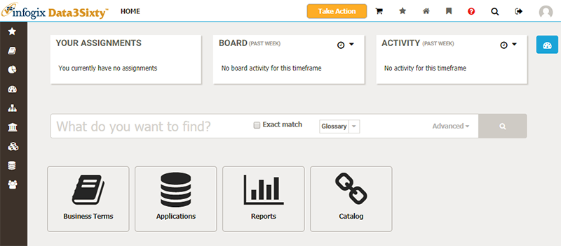

Shortcuts to commonly used assets are often made available on the Home page of the application. You can see on the example page below that shortcuts are available to take you straight to the Business Terms, Applications and Reports pages of the Glossary:

The Home page can be navigated to by clicking on the application logo in the top-left of the screen. In the example shown above, the default Infogix Data3Sixty logo image is shown, although your system administrator may have replaced this logo with that of your own organization.